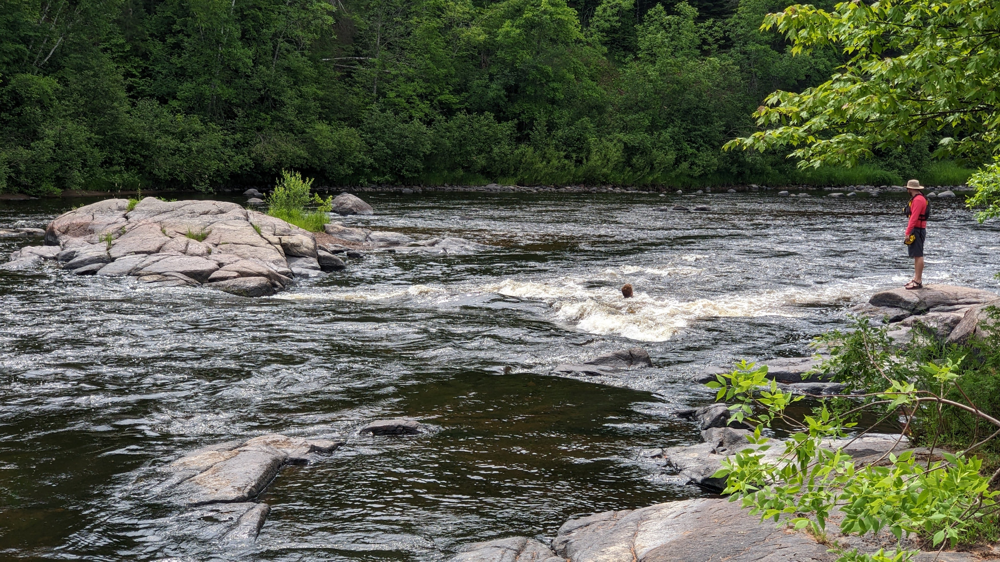

stratfordadventureclub@gmail.com
| Trip | Registration Link | Registration Deadline | Trip Date |
|---|---|---|---|
| Boundary Waters 2023 | May 30, 2023 | August 24-27, 2023 |

A small club devoted to teaching the next generation how to adventure safely, equipping them to go out on their own in the beauty of nature and utilize equipment and techniques that will enable safe and wholesome experiences with family and friends.
We don't lead trips, we teach people how to use gear and how to be safe, give them hands on experience working together on trips, then let them go adventure themselves.


Instructor, President

Instructor, CIO

Following our gathering previously to garner interest, the first scheduled outing was a day on the Flambeau river playing in the Cedar II Rapids. In preparation of this trip there was a mad scramble to remind men of the occasion and find canoes and a trailer to haul us. Finally, six of us confirmed, and Caleb, Ronnie, and myself each volunteered a canoe to meet the need. The trailer was happily loaned to us by Pastor Tim.
We took off from Stratford Community Bible Church around 8:15 am, and reached the river by 10:30. The trailer chewed through gas mileage, but we made it safely and uneventfully. We put into the river at Hervas landing, and oh by golly, those mosquitos were bad. We were out of the car and into the water in a matter of ten minutes, parking the minivan up by the trailheads, but in that short time we each recieved dozens of bites. We found the lemangrass-eucalyptus bug spray helped slightly, but not enough.
A short jaunt down the river maybe half a mile from the landing, and we arrived at Cedar Rapids. I love these rapids, I have grown very fond and comfortable with them and the layout, and they are so very pretty. I was excited to introduce the four newcomers to the joy I have found there on the river. Two of the men were semi-experienced paddlers, but the two younger men had never spent much time in a canoe, so I walked them through basic canoe terminology and paddling techniques, learning how to stear, draw, post, and maintain their balance in rough water, on their knees.
We parked to the left of the rapids to scout ahead, check water flow, debris, and conditions, and we walked through our assessment with the group so they each begin learning how to read a rapid. We talked through safety, how to bail and clear your canoe should you flip, and how to rock bounce. Caleb and I shot the rapids first, pulling up on the beach at the far end of the island which sits in the middle of the river. We then went back up the island and posted up on rocks with our throw ropes, and the next two boats went through.
The water level was very high, so the rapids were smooth where they would otherwise be tight shoots, and all three groups made it through without incident. We then spent some time taking turns rock bouncing down the river, and enjoyed a casual morning swimming, wading, and exploring.
As the afternoon came around, Caleb and I took a look at the right side of the island as you look downstream, a rock garden that is typically impassable with standard water levels. But now, it had a beautful top chute, and some very fun looking currents, so I rock bounced down it to check for rock depths, and then we portaged his his Royalex canoe to the top land shot it through. It was not terribly difficult, but there was a long hard right turn you have to make to avoid a shallows in the 3rd chute, and it was an injoyable intensity.
My favorite part of the day though, was when the two youngest men in our group decided they also wanted to try it, so using my old beater canoe, I sat in the middle and gave instructions while they frantically tried to figure out how to navigate the rocks. The first time down we ended up backwards by the 3rd shoot, but by their third attempt, they had it down pat, and cooly navigated the rushing waters with a great deal more skill. It was incredible watching them learn the river together, and a comedic hoot to listen to two old friends overcome a challenge together.
Finally, around 2:30pm, we took off from the rapids, paddling back up to Hervas landing, getting eaten alive by bugs, and making the drive back to Stratford by 5:00pm. A trip well-worth it, and a good stepping stone to prepare this group for bigger rapids and river sections in the future.
We gathered a month ago with ten men from the community who were interested in joining our regular excursions, so Caleb and I helped lead a conversation about trips the group wanted to take over the next few months.
This resulted in the addition of the calendar to the website, so you should check it out. That being said, five of us planned a mountain biking trip for Memorial Day morning, and we gathered at my house in Marshfield at 7:30 am to pack our bikes on Joe's bike rack, and started the hour drive to Levis Mound.
Several of the men had been to this county park before, but I had not, and it was an exciting place to explore. Over twenty miles of XCountry Ski and Mountain Bike trails wind their way up, down, and around several large hills (mounds), and these trails have been carefully groomed and maintained by a series of volunteers over the years.

We parked at the southeast corner of the park by 9am, and wasted no time. Joe lead the line of bikes into the woods, jumping headlong into a winding blue-rated trail with multiple bridges, jumps, and obstacles as we slowly climbed the lower slopes. We realized this was too much for those of us with less recent biking experience, and took several easier trails around the northern curve of the park.
Once we came to the foot of the real slope, we found we couldn't stop for long, because the mosquitoes outnumbered us hundreds to one. We began the ascent, and paused again at the file mile mark, 3/4 of the way to the top of the northwesternmost mound. Here we waited while Caleb caught up, as he had hit a stump and recieved a beautiful shiner for his efforts. From this camp at Rescue point 7, he took the access trail back to the car, and we four continued our climb.
Within 20 minutes, we had reached the top of the mound, cycling on narrow trails lined by rock walls and steep drops, pausing briefly at the top for a breath, then flying down the back slope over roots, sand, and rocks.
Joe got launched over his handlebars once when he found a rock on the backside of a downward switchback, and my brakes had nearly stopped working by the time we got back to the car, but overall, everyone survived the venture and considered it an enjoyable outing on a beautiful day, and we are all eager to return to Levis Mound soon.
We decided to go on a winter backpacking trip in Kentucky with Caleb this year in February. It had a dual purpose, some winter backpacking experience, visiting Red River Gorge, a renowned national forest with beautiful scenic ravines and rock faces, and to learn from some men who have been leading adventure trips for nearly two decades. All together, there were 40 men on the trip, of all walks of life.
It was a 14-hour drive from Stratford to where we were headed in Kentucky, and we laid over in Indianapolis to sleep Wednesday night before making the last four-hour stretch of the drive.
When we left, it was starting to drop what would become 18 inches (ca. 46 cm) of snow in Wisconsin, but by the time we got to Lexington, it was 80 degrees and sunny, so we had to quickly repack our bags to accommodate the difference in weather from the 30-40 degree range we were expecting.
The first day we hiked roughly three miles in through a very muddled valley and over one ridge line along the Sheltowee Trace trail, having parked very close to the suspension bridge along 715 outside of Nada, KY. We set up camp along the side of a hill with a flat plateau about 400 feet (0.12 km) off the trail.
Caleb slept in a two man Alps-brand tent, while I slept in my Eno two man hammock with a OneWind winter camping tarp, and a 20 degree Marmot down bag. We had trail pizzas for dinner, tortillas filled with pizza sauce, pepperoni, and mozzarella, wrapped three at a time in aluminum foil and set on the coals of the fire. They were extremely tasty and welcome after the hike.

The next day, we hiked twelve miles along the Sheltowee Trace trail, rough trail, Pinch'em tight trail, out to Hansen's point and Gray's arch, which took us roughly 6 hours all said and done, with a few good breaks for food and sight seeing. The views were grandiose.
Friday night, one of my friends from prior to the trip, Alec, and I hiked back to Hansen's point at roughly 10pm because the sky was completely clear, and we were blessed to find a beautiful view of the stars in a sky almost entirely unpolluted by light, up on a ridge with the dark valley spreading ponderously below us. We made it back to camp by midnight.
This whole weekend, there had been a 0% chance of rain, but the forest certainly hadn't gotten the memo, and it rained through each night we were camping. When we awoke on Saturday morning, it was pouring so hard that I just opened my tarp up as a porch, and Caleb and I did breakfast in our shelter. I was grateful to not have to exit my hammock all morning, as the temperature had dropped to a daytime high of 40 degrees, and I was quite cozy in my insulation.
We decided the majority of the accessible hiking we could do without doing another 12+ miles on Saturday, had been accomplished. Sadly, we are both out of shape enough that our feet were still tired from the day before, so we lounged through the morning and enjoyed some very insightful conversation with the other men on the trip, then packed hiked out the muddy trail and river crossings by dinner time, so we would not have to get in as late on Sunday night.
We drove back to Indianapolis Saturday night, stayed with my folks again, and finished our trip by mid-afternoon, with 28 hours driven, and some very memorable moments made in the woods.
Met together with some of the men for breakfast at 6:00 am. many eggs and much coffee, good conversation, joking about the expected high winds and cold temperatures not previously expected when we began planning this trip in June.
Caleb and I went back to his house, and spent the next few hours packing group gear into boxes, collecting many many pounds of meat and food into the coolers, and preparing to begin our journey
It is 32° at the moment, and no wind here in Stratford, Wisconsin. We're expecting to see up to 15 mph winds, and as low as 28° f, with a high on Saturday on 56° f. We have reserved two group campsites on Big Island, within the turtle Flambeau flowage state reserve. We expect 20 to 25 guys to join us, with a group of us leaving Stratford at noon, with a second later group of men joining us after work around 7:00 pm. It is a roughly 2 mi paddle from the boat launch to the island, and as there is only water access to the island, we will be paddling back to the boat launch just before 7:00 in order to guide the second group over to the campsite amidst the other islands.
It is our first time leading a group so large on a canoe trip, and we are excited to see how it turns out. We have hopes that paddling in the dark will not prove too tedious, as the water should be much calmer as the winds die down from the day.
Many of these men come from a culture that heavily favors hunting, so I have strong confidence that they will pack in a way to keep themselves warm through the day and evening, and I can only hope that they are fully prepared for the freezing nights ahead of us. I have packed additional warm wear and hand warmers and body warmers in case anyone finds their gear to be insufficient. In any case, this trip should be very educational for us all.
It is a gorgeous day today, the fall colors are in full swing, the maples are all bright shades of red and yellow, and even the oaks and other hardwoods are beginning to gain a nice array of yellow in their green. The sky is clear and blue, the birds are still singing, as they have not been driven south by the weather yet. They are regular flocks of geese beginning their migrations from further north, and the light frost on the grass adds a lovely glossy light to the still vibrant grass.
All the guys showed up between 12:00 and 12:30, we got loaded into five separate vehicles, as well as two trailers hauling a skidoo, three kayaks, and five canoes. We should arrive at the landing at 3:00 pm., and hopefully be casting off towards the campsite by 4:00.
The second group will gather at the staging point in Stratford Wisconsin at 5:00 pm., and should arrive by 7:30 or 8:00. We will paddle back to guide them to the campsites, under the use of headlamps as it will be dark. Hopefully the sky is clear enough of the currently overcast clouds that the stars will be visible. The moon is 3/4 full, and should provide a satisfactory amount of light.
Men woke at seven, cooked eggs, sausages, and biscuits on the fire. We sat around the fire with coffee for a while, then took off on boats, fishing, and trails by about 10am.

Caleb and I lead two other guys in a paddle around Big Island, clocking more than nine miles with a 15mph northeasterly wind. We arrived back at camp by 3pm.
A poem I wrote as we paddled around the island:
Let me count the strokes of my oars
They will be without number
The call of the waves that brought me to shore
also brought me cold slumber

In preparation for dinner, about 3:30 we started chopping 20 lb of potatoes up into steak fries. Glenn is our camp cook this weekend, and he brought all of the stuff to fry them up with our bratwursts
Sunday morning, we served a breakfast of bagels and butter and oatmeal and coffee at 8:00 am. We broke camp and we're loaded into our canoes by 9:45 am., and made it back to the landing by 10:30 am. from there we loaded into the vehicles and headed back to our staging location in Stratford Wisconsin, and everyone went there separate ways.
All in all The trip was a success, everyone agreed that they would be excited to do it again despite the cold weather. We all learned a great deal, about leading trips, about packing for cold weather, and about how to pack canoes more efficiently and plan better large group meals for the future.
Today we gathered in Stratford, WI, it was rainy with predictions of overcast skies without rain on the river, temperature 65 degrees
On the drive up, we discussed club outings for the next few months, and fleshed out ideas for the digital guidebook, timing for wilderness first responder and swift water rescue
Discussed how to get into climbing, logistics, certs, safety, boldering

Arrived at Beaver Dam landing at 12:45. Our plan is to paddle upriver and portage around Beaver dam cedar rapids 3 cedar rapids 2 and cedar rapids 1 and continue paddling up to Hervis landing. There we will turn around and run the river back to Beaver dam landing. Today is a scouting mission, and a workout for our upriver paddling endurance.

We made it 5 mi upriver in low water by 4:15 p.m., we are about to portage around cedar rapids one, and begin our five Mile journey back to launch. We plan to go back down to Beaver dam and shoot the rapids several times to get comfortable with the various available chutes
Chose to portage around Beaver dam due to water conditions and on a certainty of safety of each shoot. Left the launch at 6:30, we're home by 9:30, good driving conditions, slightly foggy

My wife made potato soup with bacon crumbles on top, and beer bread on the side. It was delicious, and a nice meal to end a long hard cold day
A small club devoted to teaching the next generation how to adventure safely, equipping them to go out on their own in the beauty of nature and utilize equipment and techniques that will enable safe and wholesome experiences with family and friends.
stratfordadventureclub@gmail.com
Copyright © StratfordAdventureClub. All Rights Reserved.
Designed by HTML Codex